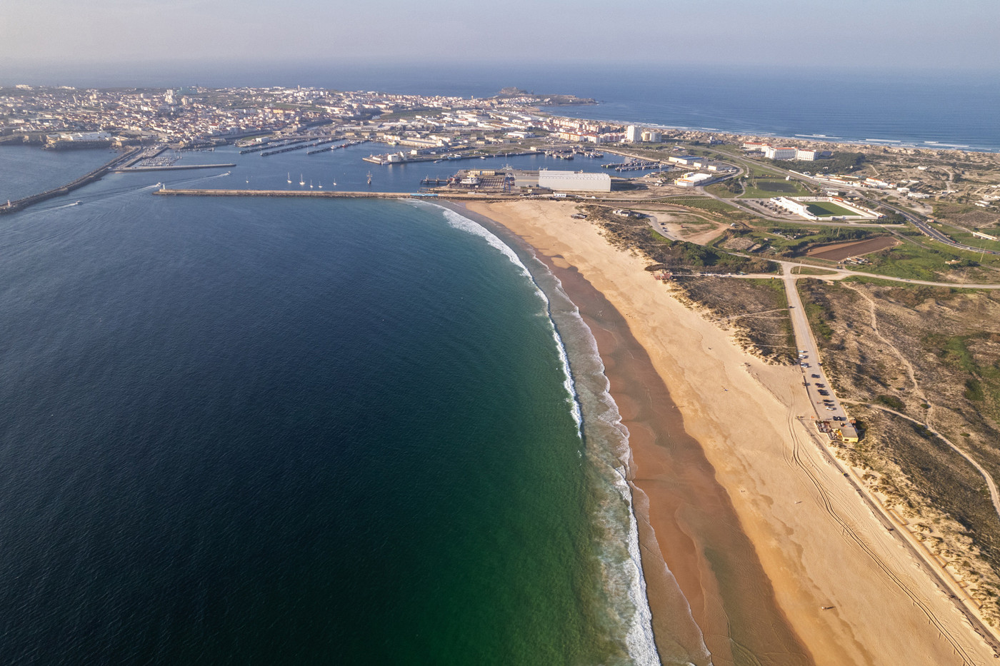
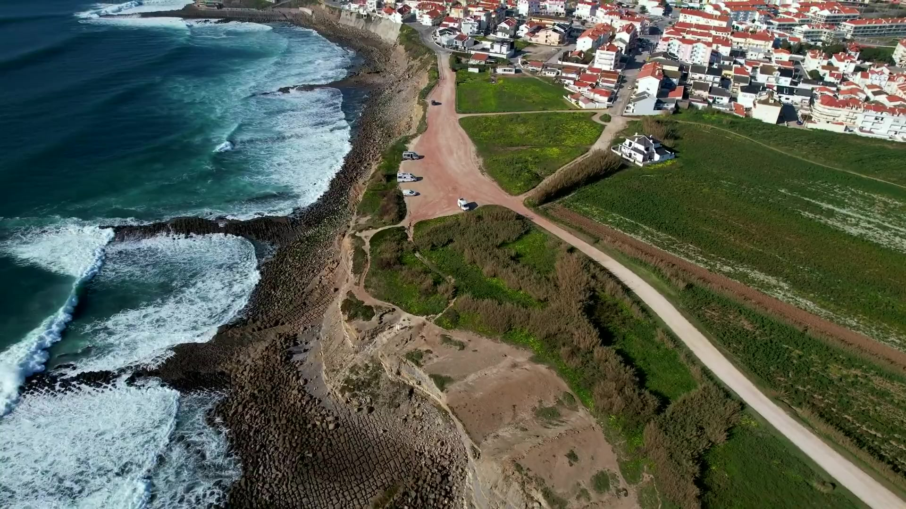
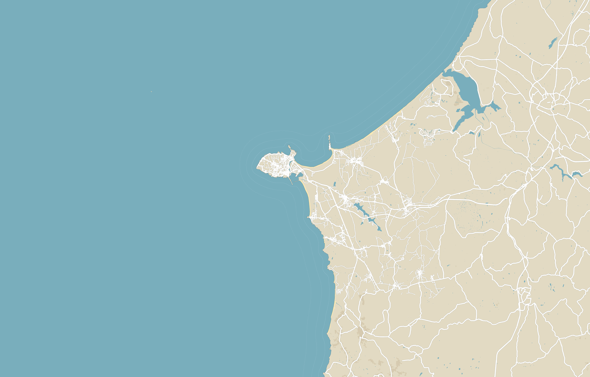
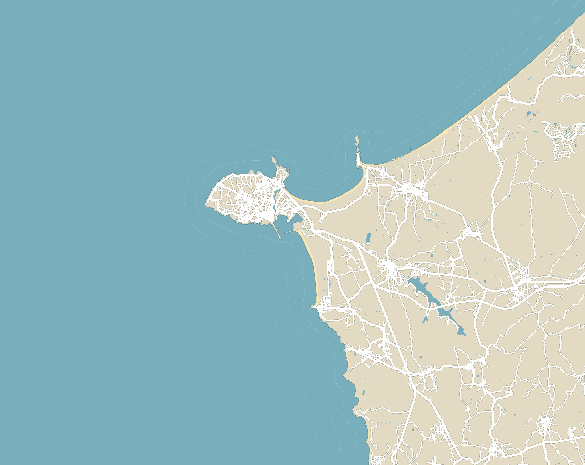
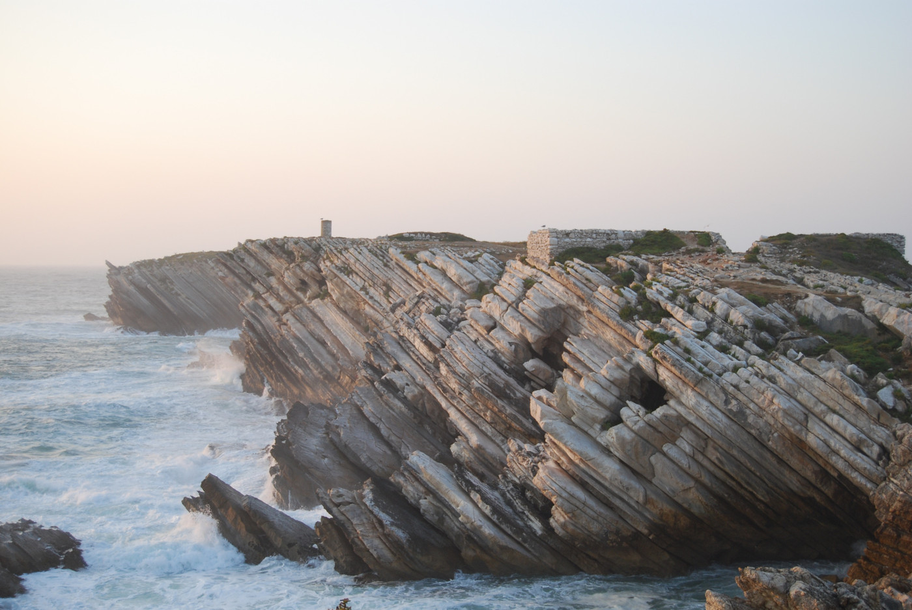
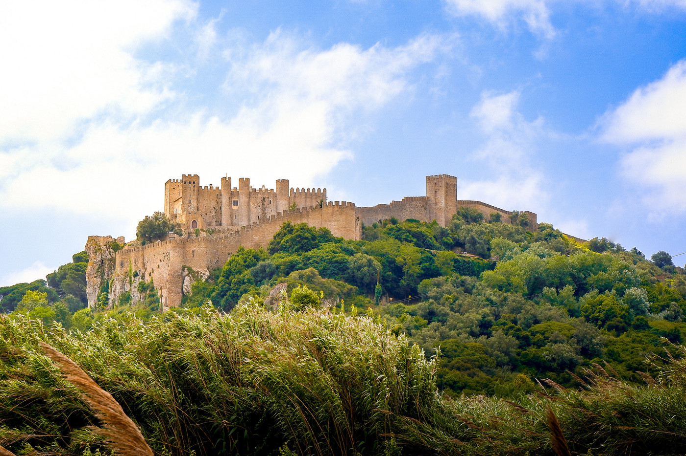
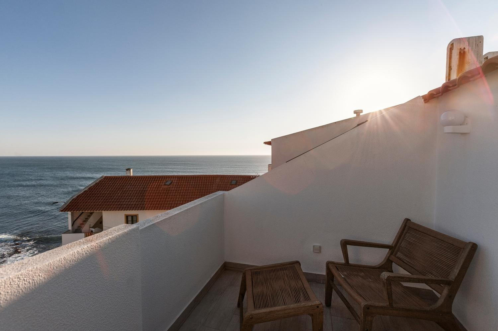

5 km · 10 min de carro
Supertubos
Uma praia longa de areia dourada que se estende até à cidade de Peniche, vista do ar.

No mesmo edifício, cada um com o seu quarto, a sua cozinha e o mar à vista.
A Praia da Consolação fica a cerca de 150 m.
Nos dois apartamentos.
Com forno, fogão e máquina de café.
Com duche, toalhas e secador.
Nos dois apartamentos.
Gratuito, na rua.


© colaboradores do OpenStreetMap

5 km · 10 min de carro
Uma praia longa de areia dourada que se estende até à cidade de Peniche, vista do ar.

10 km · 16 min de carro
Rocha estratificada a entrar pelo mar, num dos cantos mais fotografados da costa de Peniche.

22 km · 23 min de carro
O castelo de Óbidos, de pedra clara, ao cimo de uma colina verde.
